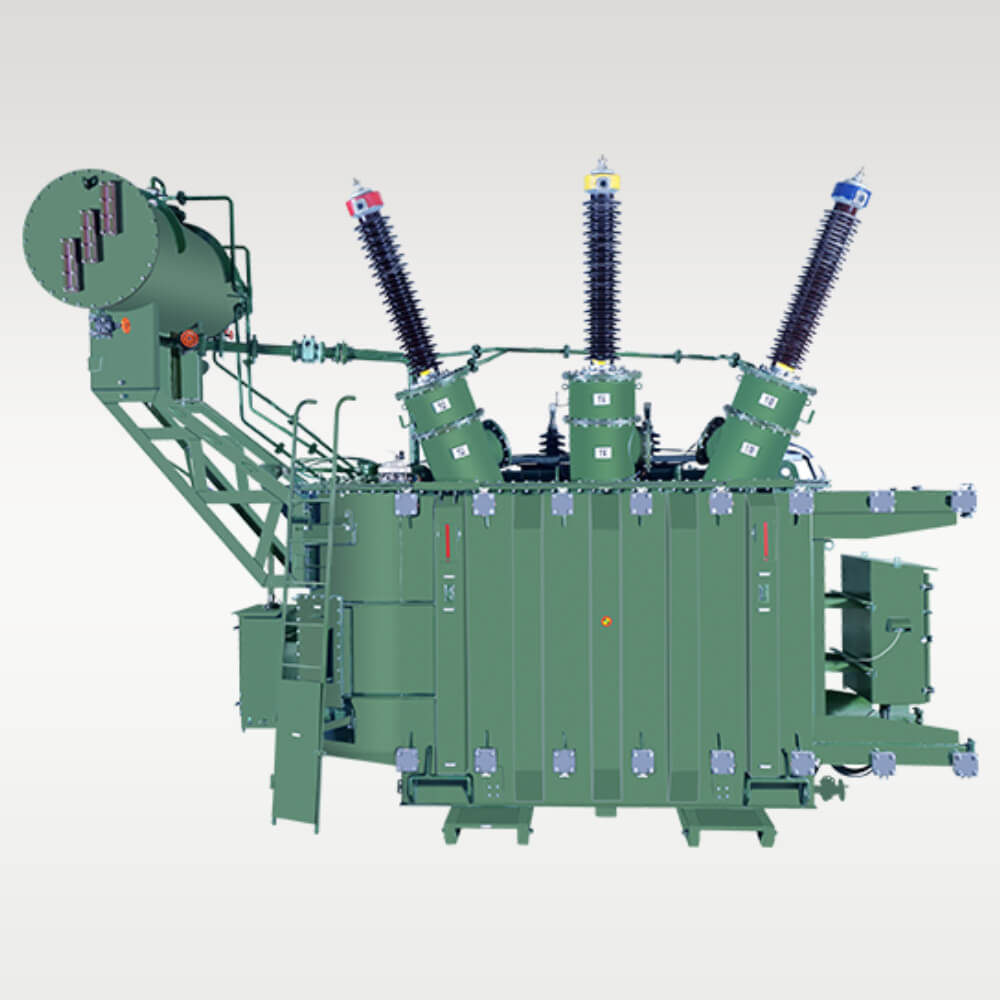
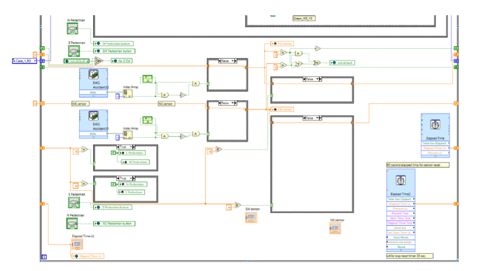
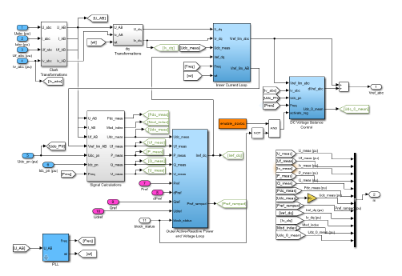

⚡
Electrical Building Services
LV Distribution · HV/LV Systems · Power Distribution · Lighting Systems · Emergency Lighting Awareness · Switchboards · Cable Sizing · Earthing & Bonding Fundamentals · Single-Line Diagrams
Graduate Electrical Engineer · Melbourne
A focused portfolio showing practical transformer exposure, power systems modelling, LabVIEW control logic, technical documentation and growing capability in electrical building services design support.
About
I recently completed my Master of Engineering Science in Electrical Engineering from Swinburne University of Technology. My experience combines transformer manufacturing and testing exposure with academic work in power systems, renewable integration, HVDC control and engineering reporting.
I am now building toward electrical engineering roles where design support, site awareness, documentation, testing, commissioning and multidisciplinary coordination come together in real projects.
Technical Skills
Relative level based on hands-on use, academic project work and current learning focus.
LV Distribution · HV/LV Systems · Power Distribution · Lighting Systems · Emergency Lighting Awareness · Switchboards · Cable Sizing · Earthing & Bonding Fundamentals · Single-Line Diagrams
Electrical Drawings · Technical Documentation · Design Reports · Equipment Schedules · Site Inspection Reports · As-Built Documentation · QA/QC Checks
AutoCAD · MATLAB/Simulink · PSS®E · PSIM · PSCAD Exposure · Revit · Microsoft Office · Excel · MS Project · Bluebeam Revu · DIALux evo Learning/Basic
Load Flow · Fault Analysis · Renewable Integration · Transformer Manufacturing & Testing · HVDC System Modelling · Voltage Stability · Protection Fundamentals
Site Inspections · Testing & Commissioning Support · Safety Documentation · WHS Awareness · Electrical Installation Awareness · Vendor / Workshop Coordination
AS/NZS 3000 Awareness · Electrical Safety · Design Compliance Support · Quality Assurance · Risk Awareness
Project Portfolio
Selected transformer, control-system and power-system work showing engineering thinking, technical communication and delivery mindset.
.jpg)

.jpg)
.jpg)
.jpg)
Worked on five transformer units rated up to 15 MVA, supporting assembly, wiring verification, transformer manufacturing activities and quality-focused documentation.

Built a LabVIEW and NI DAQ control prototype using IR sensor inputs, digital I/O and real-time actuator logic for a smart traffic control concept.

Compared ANN and PID controller response for a two-terminal VSC-HVDC transmission network under operating changes and fault disturbance conditions.
Experience
Supported testing, final verification, production records, quality checks and workshop coordination for transformer manufacturing activities.
Reviewed technical requirements for motors, pumps and cables while coordinating with vendors, dealers and factory teams.
Assisted with transformer manufacturing, testing, assembly, wiring, terminations and verification for units up to 15 MVA.
Education
Swinburne University of Technology, VIC · 2023–2025
Relevant study: power systems operation, renewable energy, power electronics, large-scale power system analysis and engineering project management.
Gujarat Technological University, India · 2018–2022
Foundation in electrical machines, power systems, control systems, electrical measurements, protection and practical engineering fundamentals.